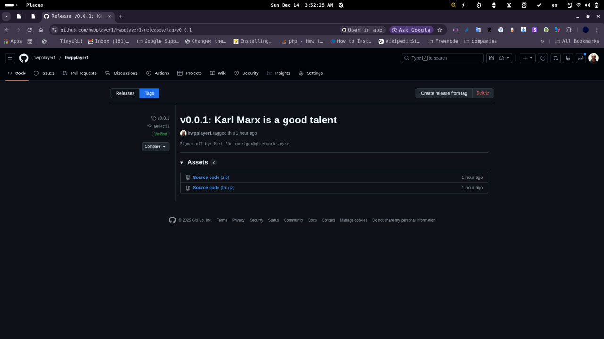

Release Notes
Here We are gonna tell you how to create tags and publish releases from tags
Create your file
touch abc.xyz.txt
Write your file with preferred text editor. On GNU/Linux it is like this :
nano abc.xyz.txt
Add your changes to git
git add .
Do not forget to change origin name with your favorite name in this case :
git remote rename origin hwpplayer1
Then sign and sign-off your commit
git commit -S -s -m "message in a bottle"
Check your branch
git branch -a
My branch is “main” and then we push commit(s)
git push -uv hwpplayer1 main
Check your repository via a web browser on your GitHub profile. Then
create a tag like v10
git tag v10
Then push tag to remote
git push -uv hwpplayer1 v10
Then open your web browser and GitHub. See tag in the right panel.

Release from Tag
After this fill the form and publish your release.
happy hacking !
Mert Gör (a.k.a thejustprince, mertgor, hwpplayer1)